winAFL实践
条评论winAFL 对 Foxit Phantom 的测试实例
介绍
Foxit Phantom 是Foxit的pdf编辑版。编辑版功能较多，因而攻击面可能会比阅读版多一些。
观察之后，选定2个dll进行测试。
- FoxitComponent.dll
- ConvertToPDF_x86.dll
FoxitComponent.dll
这个Dll 是编辑版的新功能，OCR文字识别，是个付费功能。
它的作用就是把PDF文件，或者图片中的文字处理之后，能够进行编辑。
支持传入图片，它会先把图片转成pdf。然后方可进行编辑。
IDA 分析
首先看看导出函数有什么。
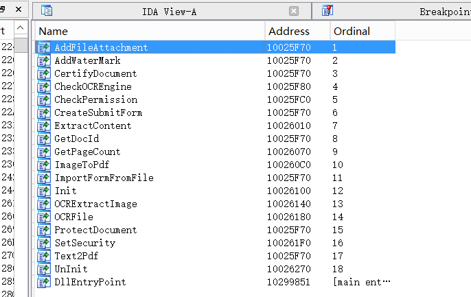
其中有个 ImageToPdf，可以尝试对这个函数进行 fuzz，编写Wrapper。
仔细分析处理过程之后（这里不赘述），得知调用 ImageToPdf 之前，会先调用 Init ，其次 ImageToPdf 的参数比较简单，就2个 wchar 型的字符串指针。
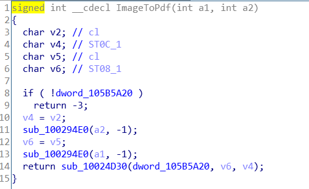
所以Wrapper写起来就非常简单，代码参考 ImageToPdf.cpp。
接着用 winAFL 的以下命令分别进行debug测试，计算覆盖率，精简样本，fuzz。
1 | # debug测试 |
目前跑了2天，看看结果。
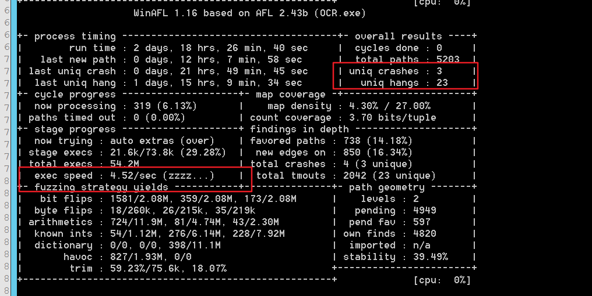
exec speed 代表fuzz执行速度，它这里非常慢。可能遇到了一些特殊的样本，这个样本测试完后，速度就会提升到 500 左右。
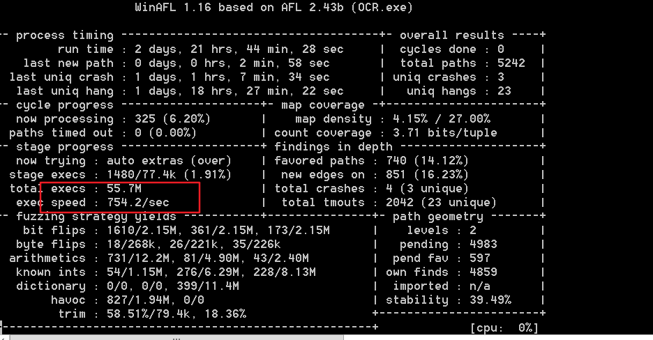
uniq crashs 代表发现的 crash 样本，有3个。我都分析了一下其中2个是一样的，空指针引用问题。另一个不会导致崩溃，但是会导致生成很大的pdf文件。
ConvertToPDF_x86.dll
这个dll是 foxit 把图片，txt这样的文件转换为 pdf 的核心dll。我之前分析过。那个时候分析的是 Foxit Reader 的。这里测试的是 Foxit Phantom。稍稍有些许不同。
这个Dll应该被很多人跑过了。这里我想再试试。
IDA 分析
具体的分析参考 ConverToPdf.docx，其中的过程大同小异。当时的情况，我没有写出来wrapper。
现在主要讲 wrapper 怎么写。
Wrapper
该 dll 解析的核心函数是 sub_1003DA70，这个函数的参数非常多。
1 | LPCWSTR __thiscall sub_1003DA70(_DWORD *this, _DWORD *a2, char a3, int a4, int a5, int a6, int a7, int a8, int a9, int a10, int a11, int a12, int a13) |
但实际分析之后， a3 到 a13 都可以写为 0。关键是 a2 与 this 指针。
this 指针经过分析知道是来自 CreateFXPDFConvertor() 函数 （CreateFXPDFConvertor是个导出函数）的返回值。所以this指针构造不成问题。
剩下特殊的 a2 指针。
a2 指针指向一片大小在 0x1800 左右的内存空间。其中加 0xb12 的位置放着输入的文件路径，而且是 wchar 型的。另外，在加 0x104 的地方放着输出的图片路径。这个路径是 foxit 把图片转换完成之后，临时存放pdf的路径。不过，最关键的地方是 a2 开头的地址放这一个 函数指针 。
a2 指针的布局实际如下。
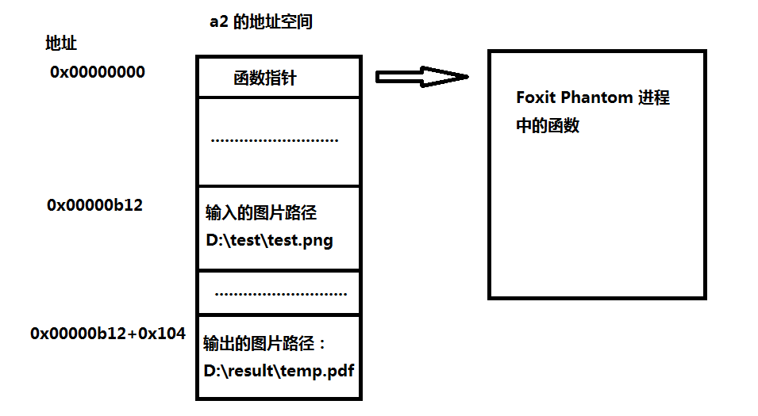
a2 中函数指针指向的是上层主进程 Foxit Phantom 中的函数。那这可不好构造。
所以我最开始打算置为 0 ，看是否会影响到这个函数的解析。
调试发现在某一处会调用到这个函数指针中的内容。
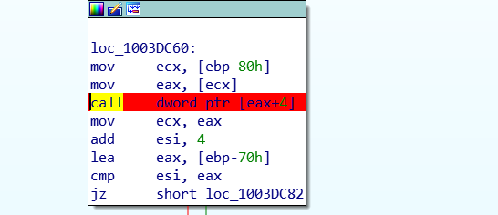
eax 就是这里的 函数指针，它会去调用指向 + 4 位置的函数。
这样的话，置0就不行。必须得复现出来。
复现 eax 函数指针
eax 的函数值来之主进程 FoxitPhantom.exe ，那就要把 FoxitPhantom.exe 当成Dll载入进来。
这里省略具体步骤，只说遇到的问题。
当调用到FoxitPhantom.exe中的函数的时候，由于 FoxitPhantom.exe 本身是个 exe ，它是被当成dll用 LoadLibrary 加载的，所以它不会像dll一样把自己初始化（exe 与 dll 入口都不一样）。所以，加载的 FoxitPhantom.exe 里面很多需要重定位的函数（即：从其他 dll 导入的函数），其地址都是错误的。
可以参考这篇文章：
https://www.codeproject.com/Articles/1045674/Load-EXE-as-DLL-Mission-Possible
这篇文章提供的办法并没有解决我的问题。因为他的exe是自己写的，可以重写代码改动，而我的exe是别人写的。
改 DLL
既然函数指针无法搞定，那我就去掉了调用这个指针的所有地方。
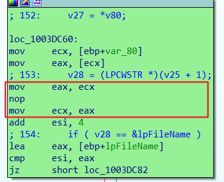
我把 dll 中这个位置的 call 给改了。后续发现并不影响解析过程（非常幸运）。这样一来，就可以直接把 eax 开头的内存地址设置为 0 就行了。
最后，这样的 wrapper 就能写了。代码参考 c2pdf.cpp。
同样，使用命令进行精简样本调试等等操作。
1 | # debug 调试 |
这里有个坑点。就是 deubg 测试的时候，它加载的 dll 名字与原来的 ConvertToPDF_x86.dll 不同。它加载的是 ConvertToPDF.dll 。所以把 dll 改名为 ConvertToPDF.dll，不然会出错的。
另外精简样本的时候，用低版本的 DynamoRIO 跑不起来，用 DynamoRIO-Windows-8.0.0-1 就可以。
测试结果与改进
测试的速度不是很快。因为这个 dll 解析的时候会生成临时的 pdf 文件，并且会把内容写进去。这就与磁盘有太多的交互，导致速度起不来。
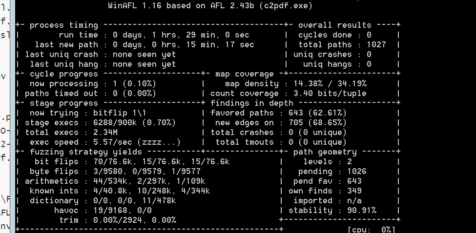
我最开始打算把创建文件的地方都改成创建失败，但是害怕该太多导致问题。就打算改动最小的地方。
改进的办法就是找到 WriteFile 的调用，把里面表示写入数据长度的参数： nNumberOfBytesToWrite ，直接改成 push 0 。
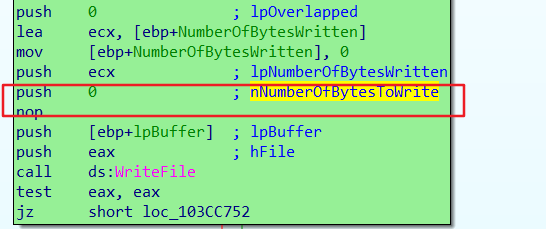
这样改动的情况最少，提高了fuzz速度。但是它走到某些路径的时候，执行速度依然很慢。看来还有待改进。
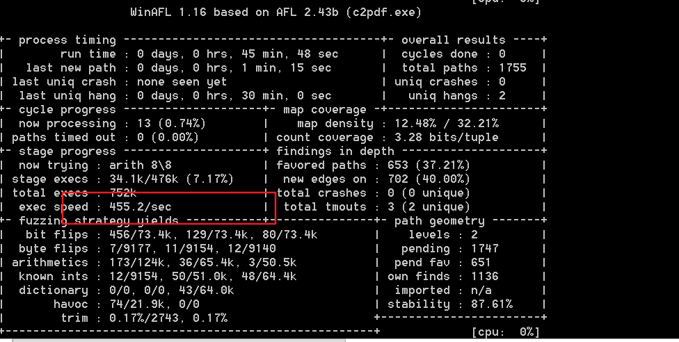
拓展 load exe AS dll
如果不修改Dll，就把它要用到的函数给它还原。同样会遇到问题。
当需要的指针被还原时，它调用会走到如下函数。
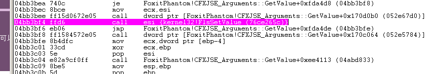
这是正常的调用流程，这里会去 call esi ，且 esi中的值是 Kernel32!FlsSetValue 。
FlsSetValue 函数涉及到线程存储了。而我这里是静态加载的EXE，然后通过偏移去取到的函数，
执行这个函数肯定会失败。
所以，还是不用还原这个指针。
还原上面的指针的时候，函数来自于FoxitPhantom.exe 。这是个EXE，用 LoadLibrary 的方法来加载，必然出错。EXE 不会像dll一样做初始化，所以导入表中的函数地址是错误的，所有用到重定位的地方也是错误的。
故，需要修复导入表和重定位的地方。好在这个exe有重定位表，但不是所有的exe都会有。
修复之后，可以通过基地址 + 偏移来取到 EXE 中的所有函数。